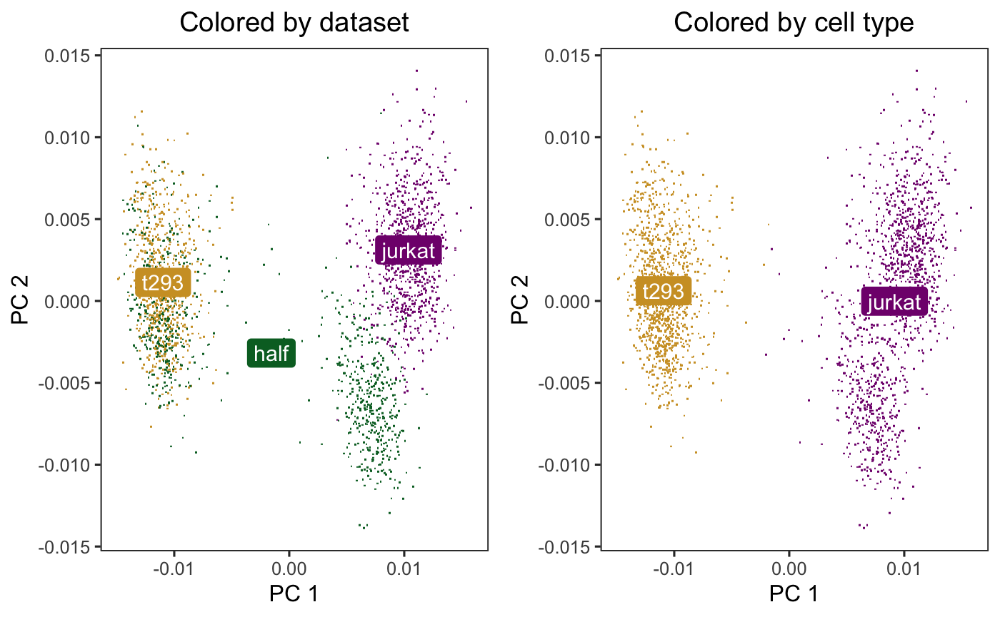
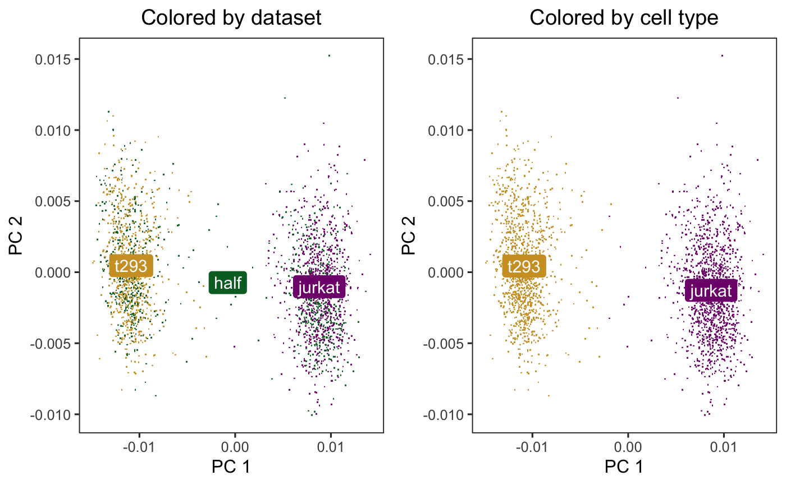

Quick start to Harmony
Korsunsky et al.: Fast, sensitive, and accurate integration of single cell data with Harmony
Source:vignettes/quickstart.Rmd
quickstart.RmdIntroduction
Harmony is an algorithm for performing integration of single cell genomics datasets. Please check out our latest preprint on bioRxiv.

Integrating cell line datasets from 10X
The example below follows Figure 2 in the manuscript.
We downloaded 3 cell line datasets from the 10X website. The first two (jurkat and 293t) come from pure cell lines while the half dataset is a 50:50 mixture of Jurkat and HEK293T cells. We inferred cell type with the canonical marker XIST, since the two cell lines come from 1 male and 1 female donor.
- support.10xgenomics.com/single-cell-gene-expression/datasets/1.1.0/jurkat
- support.10xgenomics.com/single-cell-gene-expression/datasets/1.1.0/293t
- support.10xgenomics.com/single-cell-gene-expression/datasets/1.1.0/jurkat:293t_50:50
We library normalized the cells, log transformed the counts, and scaled the genes. Then we performed PCA and kept the top 20 PCs. The PCA embeddings and meta data are available as part of this package.
Initially, the cells cluster by both dataset (left) and cell type (right).
## Warning: group_by_() is deprecated.
## Please use group_by() instead
##
## The 'programming' vignette or the tidyeval book can help you
## to program with group_by() : https://tidyeval.tidyverse.org
## This warning is displayed once per session.## Warning: Ignoring unknown parameters: segment.size## Warning: Ignoring unknown parameters: segment.size
Let’s run Harmony to remove the influence of dataset-of-origin from the embedding. By default, Harmony accepts a normalized gene expression matrix and performs PCA. Since here we already have the PCs, we specify do_pca=FALSE. The matrix harmony_embeddings is the matrix of Harmony corrected PCA embeddings.
harmony_embeddings <- harmony::HarmonyMatrix(
V, meta_data, 'dataset', do_pca = FALSE, verbose=FALSE
)After Harmony, the datasets are now mixed (left) and the cell types are still separate (right).
## Warning: Ignoring unknown parameters: segment.size## Warning: Ignoring unknown parameters: segment.size
Next Steps
Interfacing to software packages
You can also run Harmony as part of an established pipeline in several packages, such as Seurat, MUDAN, and scran. For these vignettes, please visit our website.
The most common way to run Harmony is on reduced dimensions such as PC embeddings from principal component analysis (PCA). If you use low dimensional embeddings, set do_pca = FALSE. A small single-cell RNA-seq dataset is include in the Harmony package.
library(harmony)
data(cell_lines)
cell_lines$meta_data[1:5,]
## # A tibble: 6 x 5
## cell_id dataset nGene percent_mito cell_type
## <chr> <chr> <int> <dbl> <chr>
## 1 half_GTACGAACCACCAA half 1508 0.0148 jurkat
## 2 t293_AGGTCATGCACTTT t293 4009 0.0232 t293
## 3 half_ATAGTTGACTTCTA half 3545 0.0153 jurkat
## 4 half_GAGCGGCTTGCTTT half 2450 0.0170 jurkat
## 5 jurkat_CTGATACTCCGTAA jurkat 2388 0.0601 jurkat
cell_lines$scaled_pcs[1:5,1:5]
## X1 X2 X3 X4 X5
## 1: 0.002806741 -0.0014502980 -0.0063901369 0.0002824677 0.001444069
## 2: -0.011669691 0.0008773044 0.0008972694 0.0013239566 -0.003291763
## 3: 0.009334467 -0.0069718865 -0.0025989384 0.0018824674 -0.003803677
## 4: 0.006339979 -0.0025175931 -0.0043900882 0.0002737979 -0.002497476
## 5: 0.008545583 0.0070866873 -0.0022541011 0.0016793801 0.004554607
# Run the Harmony algorithm on the PCs.
harmonized_pcs <- HarmonyMatrix(
data_mat = cell_lines$scaled_pcs,
meta_data = cell_lines$meta_data,
vars_use = "dataset",
do_pca = FALSE
)
harmonized_pcs[1:5,1:5]
## X1 X2 X3 X4 X5
## [1,] 0.004328379 0.0023091631 -4.207100e-03 0.0005384881 0.001530069
## [2,] -0.011658395 0.0001938143 3.168350e-04 0.0010923436 -0.003427295
## [3,] 0.010934694 -0.0025131628 -6.655157e-05 0.0019817633 -0.003617146
## [4,] 0.008157150 0.0018712240 -1.502931e-03 0.0006383834 -0.002240632
## [5,] 0.006956255 0.0032281410 -4.582874e-03 0.0013581108 0.004490102Normalized gene matrix
You can also run Harmony on a sparse matrix of library size normalized expression counts. The HarmonyMatrix() function will scale expression data, run PCA, and run the Harmony integration algorithm.
Seurat
You can run Harmony within your Seurat workflow. You’ll only need to make two changes to your code.
- Run Harmony with the
RunHarmony()function. - In downstream analyses, use the Harmony embeddings instead of PCA.
For example, run Harmony and then UMAP in two lines.
seuratObj <- RunHarmony(seuratObj, "dataset")
seuratObj <- RunUMAP(seuratObj, reduction = "harmony")For details, check out these vignettes:
MUDAN
You can run Harmony with functions from the MUDAN R package. For more, details, check out this vignette.
Harmony with two or more covariates
Harmony can integrate over multiple covariates. To do this, specify a vector covariates to integrate.
harmonized_pcs <- HarmonyMatrix(
data_mat = scaled_pcs,
meta_data = meta_data,
vars_use = c("dataset", "donor", "batch_id"), # multiple covariates
do_pca = FALSE
)Do the same with your Seurat object:
Detailed breakdown of the Harmony algorithm
For more details on how each part of Harmony works, consult our more detailed vignette “Detailed Walkthrough of Harmony Algorithm”.
Session Info
## R version 3.6.0 (2019-04-26)
## Platform: x86_64-apple-darwin15.6.0 (64-bit)
## Running under: macOS High Sierra 10.13.6
##
## Matrix products: default
## BLAS: /Library/Frameworks/R.framework/Versions/3.6/Resources/lib/libRblas.0.dylib
## LAPACK: /Library/Frameworks/R.framework/Versions/3.6/Resources/lib/libRlapack.dylib
##
## locale:
## [1] en_US.UTF-8/en_US.UTF-8/en_US.UTF-8/C/en_US.UTF-8/en_US.UTF-8
##
## attached base packages:
## [1] stats graphics grDevices utils datasets methods base
##
## other attached packages:
## [1] cowplot_1.0.0 harmony_1.0 Rcpp_1.0.2 ggplot2_3.2.1
## [5] dplyr_0.8.3 BiocStyle_2.10.0
##
## loaded via a namespace (and not attached):
## [1] compiler_3.6.0 pillar_1.4.2 BiocManager_1.30.4
## [4] tools_3.6.0 digest_0.6.20 evaluate_0.14
## [7] memoise_1.1.0 tibble_2.1.3 gtable_0.3.0
## [10] pkgconfig_2.0.2 rlang_0.4.0 yaml_2.2.0
## [13] pkgdown_1.4.0.9000 xfun_0.9 withr_2.1.2
## [16] stringr_1.4.0 knitr_1.24 desc_1.2.0
## [19] fs_1.3.1 rprojroot_1.3-2 grid_3.6.0
## [22] tidyselect_0.2.5 glue_1.3.1 R6_2.4.0
## [25] rmarkdown_1.15 bookdown_0.13 tidyr_0.8.3
## [28] purrr_0.3.2 magrittr_1.5 codetools_0.2-16
## [31] backports_1.1.4 scales_1.0.0 htmltools_0.3.6
## [34] MASS_7.3-51.4 assertthat_0.2.1 colorspace_1.4-1
## [37] labeling_0.3 stringi_1.4.3 lazyeval_0.2.2
## [40] munsell_0.5.0 crayon_1.3.4